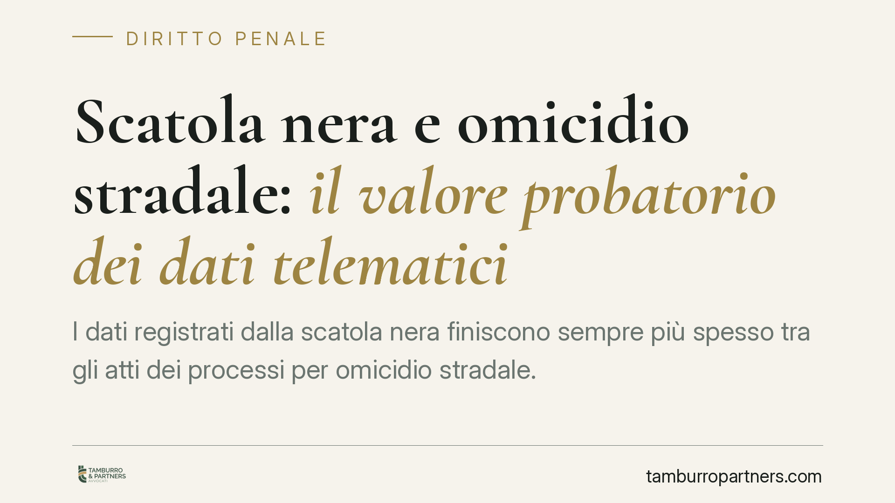

Scatola nera e omicidio stradale: il valore probatorio dei dati telematici
I dati registrati dalla scatola nera finiscono sempre più spesso tra gli atti dei processi per omicidio stradale. La giurisprudenza di legittimità tende a riconoscerne la piena utilizzabilità come elemento di prova, distinta però dalla valutazione sulla sua attendibilità. Un tema che tocca automobilisti, parti offese e difensori: comprendere il peso di quei numeri può cambiare l'esito di un procedimento penale.

Il contesto
Nei procedimenti per omicidio stradale (art. 589-bis c.p.) la ricostruzione della dinamica è il cuore del processo. Velocità, frenata, traiettoria: sono i dati che separano l'incidente colposo dall'esclusione di responsabilità, o che incidono sulla graduazione della pena.
In questo quadro assume rilievo crescente la cosiddetta *scatola nera* (EDR, *Event Data Recorder*, o dispositivo telematico assicurativo): un apparato che registra parametri di guida nei momenti prossimi all'impatto. La domanda che arriva nelle aule penali è semplice: quei dati possono essere usati come prova?
Inquadramento normativo
Il processo penale è retto dal principio di libertà della prova. L'art. 189 c.p.p. ammette le cosiddette *prove atipiche* — cioè non espressamente disciplinate dal codice — purché idonee ad accertare i fatti e non lesive della libertà morale della persona. I dati EDR rientrano naturalmente in questa categoria, trattandosi di registrazioni tecniche generate automaticamente.
Sul piano documentale rileva l'art. 234 c.p.p., che consente l'acquisizione di documenti rappresentativi di fatti mediante qualsiasi mezzo. La valutazione di quanto acquisito resta poi governata dall'art. 192 c.p.p., che àncora la decisione al libero convincimento del giudice, obbligandolo però a una motivazione razionale e verificabile.
Un chiarimento necessario. La disciplina della scatola nera contenuta nel Codice delle Assicurazioni private (D.lgs. 209/2005, in particolare l'art. 132-ter, introdotto dalla L. 124/2017 e dedicato ai dispositivi telematici nelle polizze r.c.a.) opera sul versante civilistico e assicurativo. Quella disciplina — e i relativi decreti attuativi — non costituisce la fonte del valore probatorio dei dati nel processo penale, che discende invece dai principi generali sopra richiamati. In altre parole: l'eventuale incompletezza del quadro regolatorio civilistico non impedisce al giudice penale di valutare il dato telematico secondo le regole del proprio rito.
Utilizzabilità non significa attendibilità
Qui sta il nodo centrale, spesso frainteso. Che un dato sia *utilizzabile* — cioè legittimamente entrato nel processo — non significa che sia automaticamente *attendibile*.
L'utilizzabilità attiene al rispetto delle regole di acquisizione. L'attendibilità riguarda invece il merito: quanto quel dato è affidabile, come è stato estratto, se il dispositivo era tarato e funzionante, se la catena di custodia è integra, se l'interpretazione dei parametri regge al contraddittorio tecnico.
Un dato perfettamente utilizzabile può risultare, all'esito della valutazione, poco o per nulla attendibile. La difesa che si limiti a contestare l'ingresso del dato, senza aggredirne l'affidabilità tecnica, rischia di lasciare in piedi l'elemento più pesante dell'accusa.
Il concorso di colpa della vittima
Un ulteriore chiarimento riguarda i casi in cui la vittima — tipicamente un pedone — abbia tenuto una condotta irregolare, come l'attraversamento fuori dalle strisce.
Secondo un orientamento consolidato, il comportamento imprudente della persona offesa non esclude di per sé la responsabilità del conducente, salvo che integri una causa da sola sufficiente a determinare l'evento. Più spesso incide sulla *graduazione* della responsabilità e sulla commisurazione della pena, non sul suo fondamento. Chi guida mantiene infatti un obbligo di prudenza e di dominio del mezzo che non si estingue di fronte all'errore altrui.
Anche qui i dati telematici diventano decisivi: una velocità eccessiva registrata dall'EDR può dimostrare che l'impatto sarebbe stato evitabile a velocità regolare, trasformando una condotta altrui in un elemento che aggrava, anziché scusare, la posizione dell'imputato.
Implicazioni pratiche
Per l'automobilista coinvolto, la scatola nera può funzionare sia a carico sia a discarico. Ignorarla è imprudente. Per la parte offesa e i suoi familiari, rappresenta uno strumento prezioso di ricostruzione. Per entrambi, la partita si gioca sul terreno tecnico più che su quello formale.
Cosa fare in concreto
- Richiedete subito l'estrazione e la conservazione dei dati: gli EDR hanno memoria limitata e possono essere sovrascritti. Agite prima che il veicolo venga riparato o demolito.
- Verificate la catena di custodia: controllate come il dato è stato estratto, da chi e con quale metodologia. Un'acquisizione irregolare apre spazi di contestazione.
- Nominate un consulente tecnico di parte: l'interpretazione dei parametri non è neutra. Affidatela a un esperto in grado di confrontarsi con il perito del giudice.
- Non confondete utilizzabilità e attendibilità: concentrate la difesa (o l'accusa privata) sull'affidabilità tecnica del dato, non solo sulla sua ammissibilità.
- Consigliamo di valutare precocemente la strategia processuale: la scelta tra riti alternativi e dibattimento dipende anche dal peso dei dati telematici disponibili.
---
*Contributo informativo a cura di Tamburro & Partners - Avv. Giuseppe Tamburro. Non costituisce parere legale.*
Ogni condominio ha una storia a sé.
Se gestisci un'amministrazione e vuoi un confronto su una specifica questione condominiale, scrivi allo studio. Ti rispondiamo entro un giorno lavorativo.